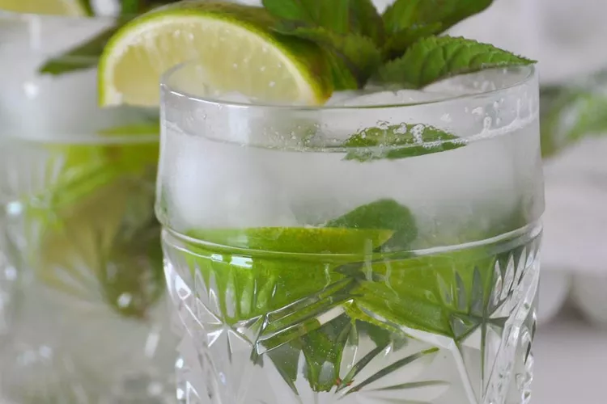

Mojito Recipe

Description
A mojito is a classic highball drink that originated in Cuba. Not surprisingly, this cocktail uses ingredients indigenous to Cuba, including rum, lime, mint, and sugar. The mixture is topped off with a little club soda to create a thirst-quenching libation. It requires a bit more labor than many mixed drinks, as it involves first muddling fresh mint, lime, and sugar together to release the flavors. But it's well worth it for a refreshing, fizzy, and mildly sweet rum cocktail that remains one of the most popular to this day.
Ingredients
- 10 fresh mint leaves
- 1/2 of a medium lime, cut into 3 wedges, divided
- 2 tablespoons of white sugar, or to taste
- 1 cup of ice cubes, or as needed
- 1 1/2 fluid ounces of white rum
- 1/2 cup of club soda, or as needed
Steps
- Gather the ingredients.
- Place mint leaves and 1 lime wedge into a sturdy glass. Use a muddler and crush to release mint oils and lime juice.
- Add remaining lime wedges and 2 tablespoons of sugar, and muddle again to release the lime juice. Do not strain the mixture.
- Fill the glass almost to the top with ice.
- Pour in rum and fill the glass with club soda.
- Stir, taste, and add more sugar if desired.
Home